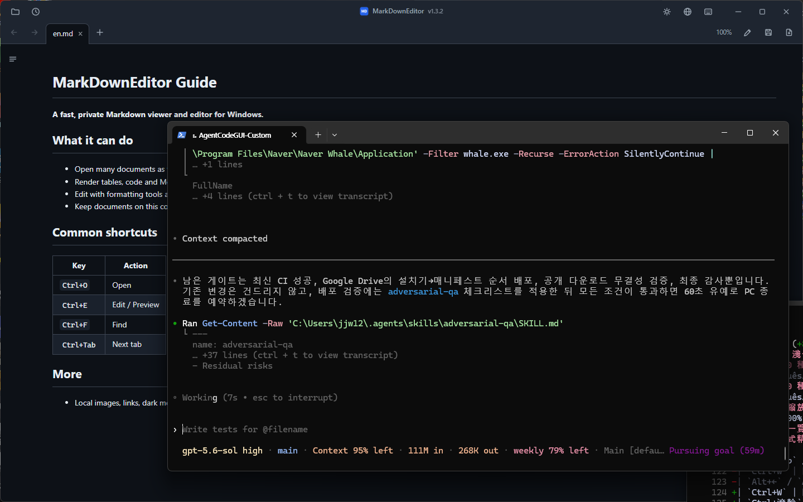

Set MarkDownEditor as an Open With choice for .md files and use Explorer as usual. Editing is one Ctrl+E away.
Open, reorder, restore, and navigate documents without spawning a new window for every file.
Tables, tasks, code highlighting, local images, links, and offline Mermaid diagrams.
Formatting toolbar, find and replace, screenshot paste, auto-save recovery, external-change reload, and PDF export.
Korean, English, Japanese, Simplified and Traditional Chinese, Spanish, French, German, Russian, and Brazilian Portuguese.
Both packages target Windows 10 version 1809 or newer and Windows 11 x64. Neither requests administrator rights.
Best for daily use. Installs per-user, uses automatically serviced Evergreen WebView2, and adds Start menu and Open With entries. User data is stored under %LOCALAPPDATA%\MarkDownEditor. Internet is needed only if WebView2 is missing; Setup fails clearly if it cannot install that prerequisite.
Best for USB, offline, and no-install use. Includes a WebView2 Fixed Runtime and keeps data beside the executable when the folder is writable.
Download portable ZIPSHA256SUMS.txt, or build locally.%TEMP%\MarkDownEditor can be removed manually.